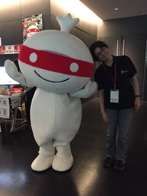
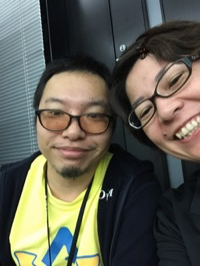
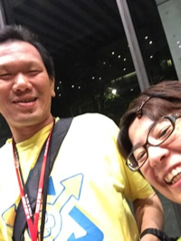
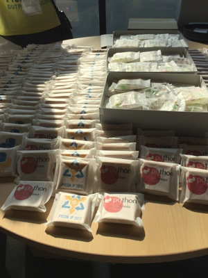
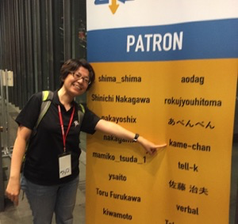

鉄は熱いうちに打て
=============================
PyCon JP 2017 に参加しました。¶
2017-09-15
今年も PyCon JP 2017 に参加しました。
仕事で感想とか書いたので自分のブログは脳内の楽しかった思い出を垂れ流します。
恒例の写真¶
３年連続参加でした。そして、今年も企業ブースを出しました。 私以外は社長とスピーカーという組み合わせのため、結構一人の時が多かったです。 とはいえ、スピーカー陣も自分の発表でドキドキのはずなのにブースも頑張ってすごい～な。って思いました。 来年はその立場になりたい！！
1年前よりも知っている人も増えていて、参加するのがどんどん楽しくなるなぁと思いました。
やはりPyCon といえばパーティーですよね。パーティー楽しかったです。 日本酒を飲みすぎて、ちょっと二日酔いになっちゃいました。誰だよ日本酒をたくさん寄付した素晴らしいスポンサー様は！
座長と一緒（しらふ）
理事と一緒（だいぶヤバイ）
来年はさらに英語力とPython力を上げて参加したいなーと思えるひとときでした。スタッフと関係者の皆様ありがとうございました。
話はかわり、ブースを出すということは自身が広告塔になることです。私の印象が悪いと商品の印象まで悪くなります。 去年はあまり深く考えずに参加していましたが、あとで写真とか見て「誰、このおばさん！？」とショックでした。 そんなわけで今年は7キロ痩せて挑みました。去年よりはおばさん感が下がって満足です。
おやつも美味しかったし、このマークすごい！
ところで、今回はパトロンでした。初パトロン。 なんか、スタッフもやってみたいんですが家庭の事情で無理なのでちょっとだけ貢献したいなと思ってなりました。 かなり、浮かれてました。楽しかったです。別になんてことないけど、楽しかった。
こんな写真にも参加できて感無量です。
パトロン5人衆集結 pyconjp pic.twitter.com/tOJ8aTlptZ
— 佐藤治夫 (@haru860) 2017年9月8日
来年も絶対参加します！来年こそはスピーカーで参加したい！